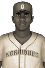

|
|
|  | Canadian League Top Player Is Moore Thursday, October 11th, 1923 At the age of 21, Methanon Moore of the Toronto Blue Sox could very well have his best years ahead of him. It's a startling thought when you consider the year he had in 1923 was good enough to win the first baseman the Canadian League Most Valuable Player Award. "See the ball, hit the ball," he said. "That's my basic approach." The top hitter put up a .376 batting average this year, as well as a .445 on-base percentage. He played 110 games and racked up 159 hits, 28 doubles, 4 triples, 15 home runs, 74 RBIs and 71 runs scored. He received 8 first place votes out of a possible 16. Carmen Morales of the Boston Redcoats finished second in voting with 8 first place votes, while Remi Émond of the Toronto Blue Sox finished third. Player - Team - First Place - Total Points Methanon Moore - Toronto Blue Sox - 8 - 183 Carmen Morales - Boston Redcoats - 8 - 181 Remi Émond - Toronto Blue Sox - 0 - 109 Elijah Kollar - Chicagou White Sox - 0 - 107 Charles Trottier - New York Rebels - 0 - 98 Nicolas Bélanger - Boston Redcoats - 0 - 88 Somchai Polk - Chicagou White Sox - 0 - 49 Louis Mongeau - New York Rebels - 0 - 46 Eli Dupuis - Wolfeburg Celtics - 0 - 29 Tristan Charron - New York Rebels - 0 - 22 Ambler Stahl - Ottawa Indians - 0 - 16 Grayson Landis - New York Rebels - 0 - 12 Erick Dour - Boston Redcoats - 0 - 1 Gene Hall - New York Rebels - 0 - 1 Joshua Millward - Baltimore Robins - 0 - 1 Tsugunosuke Shibata - Philadelphia Liberty - 0 - 1 |   |